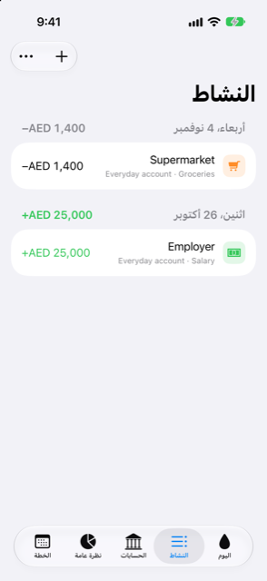

الدليل › تسجيل المال
قائمة النشاط
كل ما حدث، التصفية، البحث، التراجع، التكرار، التقسيم.
يعرض النشاط كل عملية مالية سجّلها Damla، مجمّعة حسب اليوم مع بداية أحدث يوم. هنا تتحقق مما حدث، وتجد عملية دفع مرة أخرى، وتغيّر أو تحذف أو تكرر أو تقسّم أي إدخال.

متى تستخدمه
- لترى ما دخل وما خرج في يومٍ ما، وما انتهى إليه مجموع اليوم.
- لتلحق بما أضافته تنبيهات البنك التلقائية منذ آخر مرة نظرت فيها.
- للعثور على عملية دفع باسمها أو ملاحظتها أو حسابها.
- لتصحيح عملية مالية أو إزالتها أو تكرارها أو تقسيمها بعد تسجيلها.
خطوة بخطوة
- افتح تبويب النشاط. تعرض القائمة كل يوم يعرفه Damla، الأحدث أولًا.
- لإضافة شيء، انقر قائمة الإضافة (زر علامة الزائد) واختر اكتب جملة أو املأ نموذجًا.
- لتضييق القائمة، انقر تصفية. في جزء "إظهار" اختر نوعًا واحدًا فقط: كل شيء، من التنبيهات، مصروفات، دخل، تحويلات، تسويات، أو أرصدة افتتاحية. في القائمة نفسها، ضمن الحساب، اختر حسابًا واحدًا أو كل الحسابات.
- للعثور على شيء، اكتب في مربع البحث أعلى القائمة. يقارن ما كتبته بأسماء المستفيدين والملاحظات وأسماء الحسابات.
- انقر عملية مالية لتغييرها. يفتح الإدخال العادي في النموذج؛ والإدخال المقسَّم عبر فئات يفتح ورقة التقسيم.
- اسحب عملية مالية إلى اليسار وانقر حذف لإزالتها.
- على صف في قائمة الأيام، اسحب إلى اليمين (من الحافة اليسرى) لرؤية الإجراءات الأخرى: تكرار (لمصروف أو دخل)، تحويل إلى أقساط (لمشتريات البطاقة) وتقسيم. يمكنك أيضًا الضغط مطولًا على مصروف أو دخل للوصول إلى إجراء تكراره.
- لرؤية القائمة كاملة مجددًا، عدّل التصفية أو امسح مربع البحث.
من الجيد أن تعرف
- الرقم على يمين عنوان كل يوم هو مجموع اليوم: ما دخل ناقص ما خرج. والتحويلات بين حساباتك الخاصة ودفعات البطاقة لا تُحتسب فيه، واليوم الذي لا يتضمن سواها لا يظهر له أي مجموع على الإطلاق.
- يظهر المخرج بعلامة ناقص، والوارد بعلامة زائد بلون أخضر. والتحويلات بين حساباتك الخاصة والتسويات بالرمادي. والشراء بعملة أخرى الذي ما زال تقديريًا يعرض مبلغه بعلامة
≈حتى يؤكده كشف الحساب. - الأرصدة الافتتاحية ليست أحداثًا، لذا تُستبعد من القائمة العادية. لرؤيتها، استخدم تصفية > أرصدة افتتاحية، أو ابحث.
- يفتح تكرار نموذجًا جديدًا بالمبلغ والحساب والفئة والمستفيد نفسها، بتاريخ اليوم. ولا يُحفظ شيء حتى تنقر حفظ في ذلك النموذج. لا يمكن تكرار التحويلات بين الحسابات ودفعات البطاقة والعمليات المقسَّمة.
- تقسيم مخصص لدفعة واحدة تغطي عدة فئات، مثل شراءٍ من متجر بقالة كان فيه مواد غذائية وشيء مدرسي واحد. اختر فئة ومبلغًا لكل جزء حتى لا يبقى شيء للتوزيع. الدفعة نفسها لا تتغير؛ والعملية المقسَّمة مسبقًا تفتح الورقة نفسها عند النقر عليها.
- يظهر تحويل إلى أقساط فقط لشراء ببطاقة لم يوضع بعد في خطة أقساط. يفتح نموذج الأقساط، حيث تكتب الأرقام التي يذكرها بنكك — القسط الشهري، وعدد الأشهر، وأي رسوم، وتاريخ البداية — ثم تنقر تحويل. لا يتغير شيء حتى تفعل.
ذو صلة
هل هناك شيء غير واضح أو ناقص؟ اكتب إلى support@raveniq.ai واذكر الصفحة.